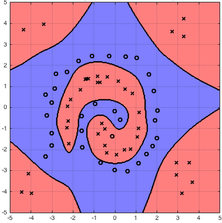

Different Kernel Functions
There are many different types of Kernel. Here are a few of common ones.
The Linear Kernel
The Linear kernel is the kernel we used in the first example.
It is linear because there is no projection into a higher dimension and the SVM is found in the initial dimension.
It is extremely quick to calculate in comparison to non linear kernels.
The Polynomial Kernel
For degree-\(d\) polynomials, the polynomial kernel is defined as:
\[
K(x,y) = \left( x^{\top}y+C \right)^d
\]
- \(x\) and \(y\) are vectors in the input space.
- \(c \ge 0\) is a free parameter trading off the influence of higher-order versus lower-order terms in the polynomial.
The polynomial kernel is the one that we used in the projection example earlier.
The polynomial kernel is useful in natural language processing although in most other applications, the Radial Basis Function is used instead.
The Radial Basis Function
The RBF is defined as:
\[
\begin{align}
(\mathbf{x}\cdot \mathbf{x}')
&= \exp{\left( -\gamma ||\mathbf{x}-\mathbf{x}'||^2 \right)}
\end{align}
\]
An example of a very useful kernel fucntion is the Radial Basis Function. Here is an example of an RBF Support Vector Machine:

The radial basis function is very useful because it allows for us to represent an infinite dimension projection. Since a dot product is just a summation, we can use an approach similar to
infiite series to find an approximation of this dot product.
How the RBF represents an infinite dimension projection
Remembering the definition of the kernel function:
\[
k(\mathbf{x}_i,\mathbf{x}') = \langle\varphi(\mathbf{x}),\varphi(\mathbf{x}')\rangle_{\mathcal{V}}
\]
We can prove that \( \varphi_{RBF}:\mathbb{R}^n \rightarrow \mathbb{R}^{\infty} \).
(We choose \(\gamma = -\frac{1}{2}\) to avoid loss of generality.)
\[
\begin{align}
K_{RBF}(\mathbf{x},\mathbf{x}')
&= \exp{\left[ -\frac{1}{2} || \mathbf{x}^2 - \mathbf{x'}||^2 \right]} \\
&= \exp{\left[ -\frac{1}{2} \langle \mathbf{x} - \mathbf{x'}, \mathbf{x} - \mathbf{x'} \rangle \right]} \\
&= \exp{\left[ -\frac{1}{2} \left( \langle \mathbf{x} , \mathbf{x} - \mathbf{x'}\rangle - \langle \mathbf{x'}, \mathbf{x} - \mathbf{x'} \rangle \right) \right]} \\
&= \exp{\left[ -\frac{1}{2} \left( \langle \mathbf{x},\mathbf{x} \rangle - \langle \mathbf{x},\mathbf{x'} \rangle - \langle \mathbf{x'},\mathbf{x} \rangle + \langle \mathbf{x'},\mathbf{x'} \rangle \right) \right]} \\
&= \exp{\left[ -\frac{1}{2}\left(||\mathbf{x}||^2 + ||\mathbf{x'}||^2-2\langle \mathbf{x}, \mathbf{x'}\rangle\right)\right]} \\
&= \exp{\left[ -\frac{1}{2}||\mathbf{x}||^2-\frac{1}{2}||\mathbf{x'}||^2 \right]}\exp{\left[ -\frac{1}{2}-2\langle \mathbf{x}, \mathbf{x'} \rangle \right]} \\
\end{align}
\]
Since
\[
\exp{ \left[ -\frac{1}{2} || \mathbf{x}^2 - \mathbf{x'}^2 || \right]} = C \quad \text{(constant)}
\]
We can use the taylor expansion of \(e^x\) to show:
\[
\begin{align}
&\exp{\left[ -\frac{1}{2}||\mathbf{x}||^2-\frac{1}{2}||\mathbf{x'}||^2 \right]}\exp{\left[ -\frac{1}{2}-2\langle \mathbf{x}, \mathbf{x'} \rangle \right]} \\
&= C \exp{\left[ -\frac{1}{2}-2\langle \mathbf{x}, \mathbf{x'} \rangle \right]} \\
&= C e^{\langle \mathbf{x}, \mathbf{x}' \rangle} \\
&= C\sum_{n=0}^{\infty}\frac{{\langle \mathbf{x}, \mathbf{x}' \rangle}^n}{n!} \\
&= C\sum_{n=0}^{\infty}\frac{K_{poly(n)} (\mathbf{x}, \mathbf{x}' )}{n!} \\
\end{align}
\]
Therefore we see that the RBF kernel is formed by taking an infinite sum over polynomial kernels.
The Fisher Kernel
This kernel combines Support Vector machines with generative models such as hidden Markov models to combine the performance of SVMs with the ability of process data that has a variable length.
It uses the Fisher score:
\[
U_X=\nabla_{\theta}\log{P(X|\theta)}
\]
It is defined as:
\[
K(X_i, X_j) = U_{X_i}^{T}\mathcal{I}^{-1}U_{X_j}
\]
Where \(\mathcal{I}\) is the Fisher information matrix.
The fisher Kernel can be applied to image representation for classification and retrieval. It can take problems with sparsity and high dimensionality and produce a result that is compact and dense.
This is very desirable in image representation problems.